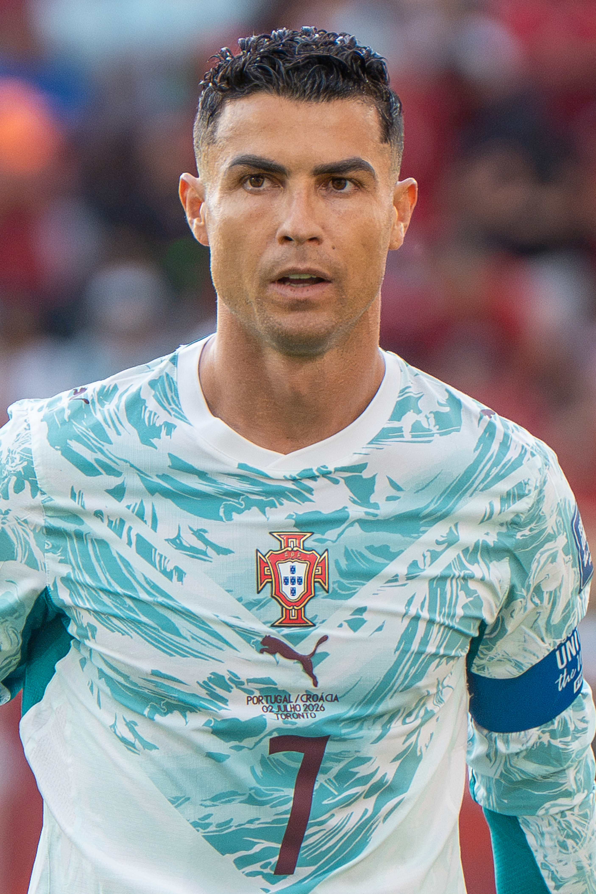

Португальский футболист, один из самых известных и успешных игроков в истории футбола. Прославился своей скоростью, техникой и большим количеством забитых голов.

Основные факты:
- Дата рождения: 5 февраля 1985 года
- Страна: Португалия
- Позиция: нападающий
- Номер: 7
- Рост: 187 см
Клубы:
| Года | Клуб | Голы |
|---|---|---|
| 2009–2018 | Реал Мадрид | 311 |
| 2018–2021 | Ювентус | 81 |
| 2021–2022 | Манчестер Юнайтед | 19 |
Главные достижения:
- Пятикратный обладатель «Золотого мяча».
- Пятикратный победитель Лиги чемпионов УЕФА.
- Чемпион Европы 2016 года со сборной Португалии.
- Победитель Лиги наций УЕФА.